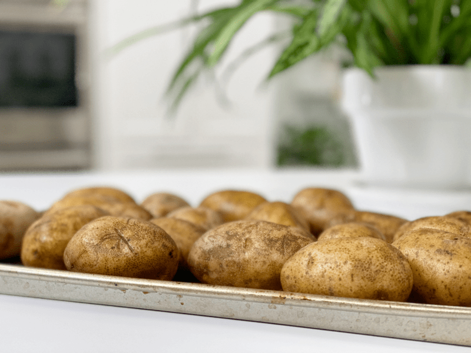
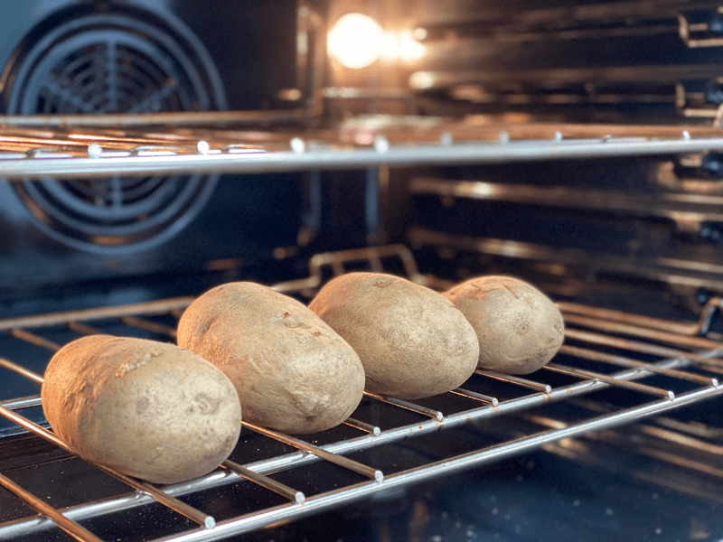
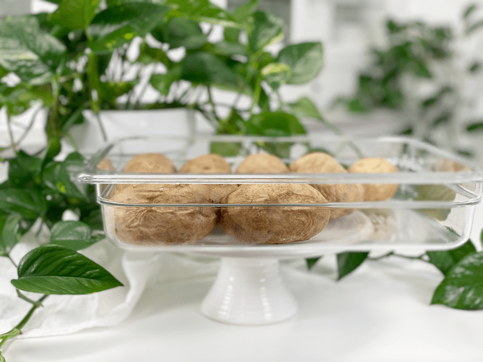

Baked Potatoes | Batch Cooking | Oil-Free
Whether you are cooking for a large crowd or just meal prepping for the week, making large quantities of potatoes is super easy. As of late, I have been tinkering around with the Starch Solution by Dr. McDougall. It’s not too different from how I have been eating, but I am definitely eating more starches than ever before. And I have to say that I have been feeling amazing. I am not advocating it; I am just one of those who always like to try different macro intakes. With this way of eating, potatoes are a staple food. I LOVE potatoes, but one thing I learned a decade ago is that they are considered a resistant starch.

Have You Heard of Resistant Starch (RS)?
There are books on this topic, so if you find the following tidbit interesting, please continue the research. Starches are common carbs found in grains, potatoes, beans, corn, and many other foods. However, not all starches are processed the same way by the body. Normal starches are broken down into glucose and absorbed, which is why your blood glucose, or blood sugar, increases after eating.
RS functions like soluble, fermentable fiber. It goes through your stomach and small intestine undigested, eventually reaching your colon, where it feeds your friendly gut bacteria. Many studies show that resistant starch can have powerful health benefits, which include improved insulin sensitivity, lower blood sugar levels, reduced appetite, and various benefits for digestion (1).
Getting the full effect of RS (resistant starch) starts by cooking, cooling, and then reheating potatoes, rice, or beans. Foods with the highest levels of RS are raw potatoes, green bananas, plantains, cooked and cooled potatoes, cooked and cooled rice, parboiled rice, and cooked and cooled correctly prepared (soaked or sprouted) legumes. Another way to increase your levels of RS3 is to cook your potatoes al dente, which means you slightly undercook them, which retains more of their resistant starch. What I shared here is just the tip of the iceberg, to shed some light on the topic. I wrote a post going a little bit more in-depth (here).
What Type of Potato Works Best for Baked Potatoes?
- Starchy potatoes such as Idaho and Russets – These two work really well because they are high in starch and low in moisture, making them light and fluffy once cooked.
- All-purpose potatoes (example: Yukon Gold): Good for roasting, mashing, or baking.
How to Prepare Potatoes for Baking
- Always prick your spud! The horror stories of them exploding under the pressure of oven heat is true. As the potato cooks, the skin acts as a seal, trapping water that expands the spud and steams during cooking. If it can’t escape…boom!
- Avoid potatoes that are wrinkly and mushy, have green spots or mold, and potatoes that are soft and sprouting.
- Do not wrap in aluminum foil (for health reasons). Plus, the foil steams the potato as it traps the moisture inside, and the inside of the potato will be soggy.
- Bake potatoes with skin–this is one of the healthiest ways to cook potatoes. Whole and baked potatoes with skin on is the purest form, as this process can minimize loss of nutrients.
- Just in case you might be curious about how to properly store potatoes, please click (here).
Baking Time
When it comes to baking potatoes, you can remove them from the oven at different stages, depending on what you plan on doing with them. You can cook them until they are entirely soft through the middle, which is perfect if you plan to enjoy a typical baked potato.
I prefer to bake most of mine until they are 80% cooked. I can push a fork into them, but it doesn’t slide right in. I cut these potatoes into coins, place them on a baking sheet, spritz them with raw apple cider vinegar, sprinkle them with salt, and broil them until the edges brown.
Ready to hop in the kitchen and get baking? If you are interested in other cooking methods for potatoes, click (here) for steaming and (here) for boiling. Have a blessed day, amie sue
 Preparation
Preparation
- Preheat the oven to 475 degrees (F) for thicker, crunchy skin. Or reduce to 400 degrees (F) for a slower bake.
- Scrub the potatoes under cold running water with a stiff brush, removing any surface soil, eyes, or blemishes.
- Dry the potatoes with paper towels and place them on baking sheets (single layer).
- If you are baking several cookie sheets’ worth or even just one…be sure to sort the potatoes onto baking sheets by size. If the potatoes on each sheet are all approximately the same size and shape, they’ll cook evenly and will be done roughly around the same time.
- Alternatively, you can place them directly on the rack in the middle of the oven. Leave enough space between them that they are not touching.
- Pierce each potato several times with a fork or paring knife so the potato can release steam during baking.
- Option – Rub or spray the potatoes lightly with cooking oil, and salt the outsides with a light sprinkling of coarse salt. If you are avoiding fats, skip this step.
- Bake the potatoes for approximately 1 to 1 1/2 hours (start checking them at 1-hour mark) depending on size, rotating the sheets every 30 minutes, so they bake evenly.
- I place small potatoes on baking sheets and large ones directly on the oven rack. By placing them directly on the rack, the air can circulate the potatoes, giving a nice even bake.
- Serve immediately. You can cover and keep them warm for up to an hour, or store them in the fridge for up to 7 days. If storing, use a hot mitt to grab a potato and place in a square of parchment paper; then wrap to help seal in the dry heat of the oven.
-

-
For small potatoes, I bake them on a cookie sheet.
-

-
For large potatoes, I place them directly on the oven rack.
-

-
Cooked potato storage. This is a food-safe cambro with a snap-on lid. I prefer this to plastic ziplock bags to cut down on the use of disposable plastics.
© AmieSue.com